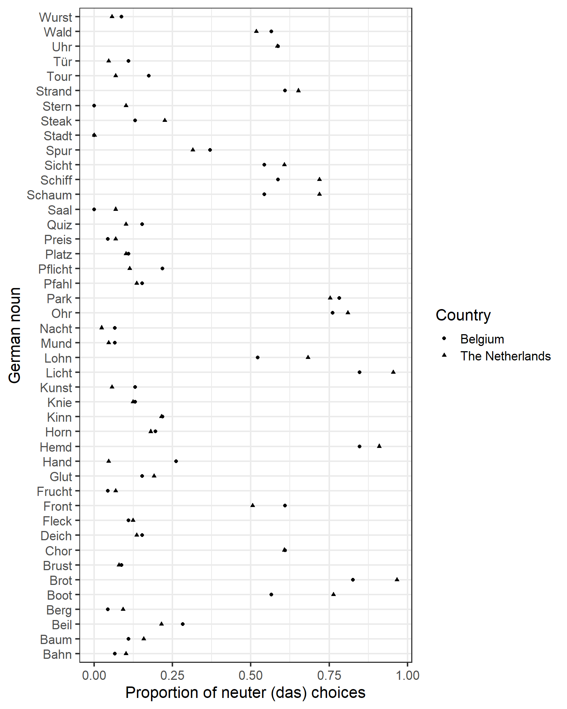
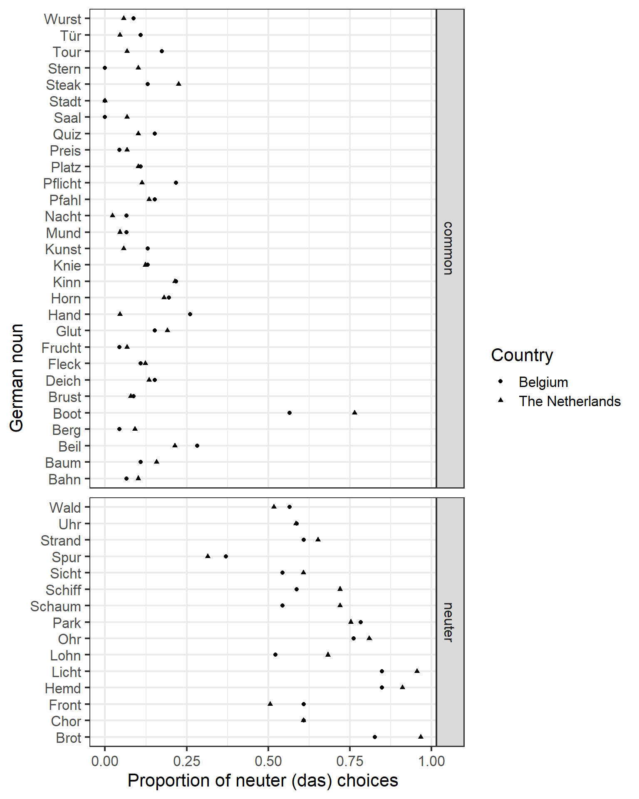
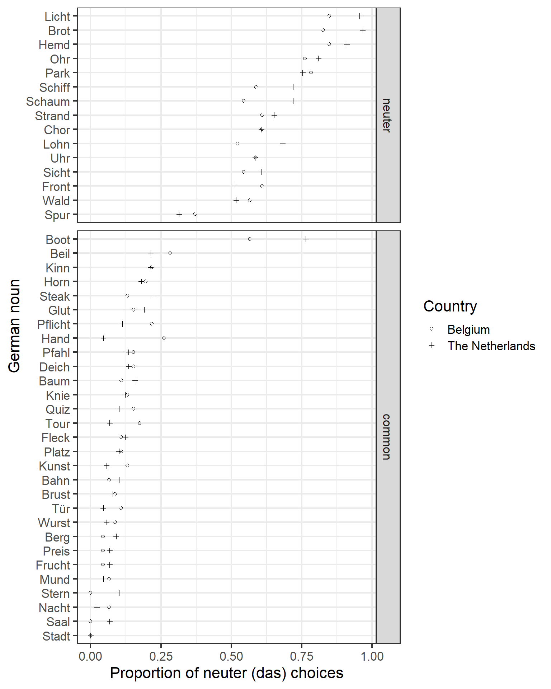
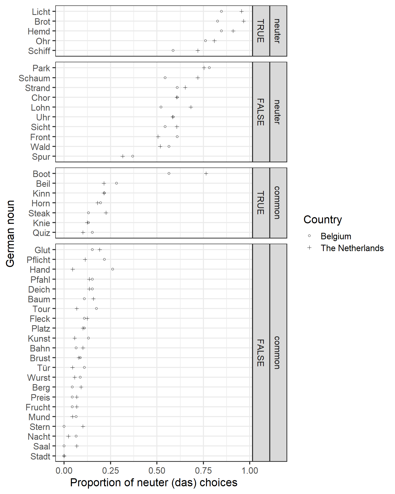
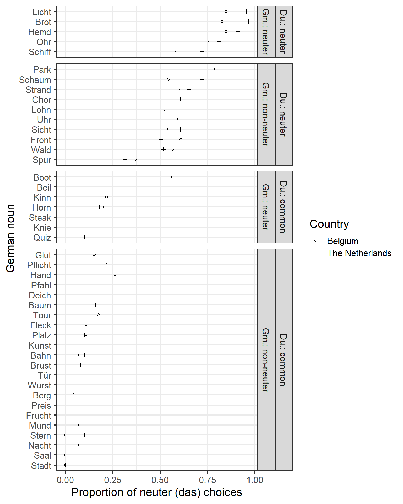

Tutorial: Drawing a dot plot
tutorial
graphs
R
In the fourth tutorial on drawing useful plots with ggplot2, we’re taking a closer look at dot plots – a useful and more flexible alternative to bar and pie charts.
What’s a dot plot?
The three panels below show a same data in a pie chart, a bar chart and a dot plot. For data like these, the bar chart and the dot plot allow us to compare the sales of different kinds of pie about equally well. The dot plot has a higher data-ink ratio (Update (2023-08-08): This external link appears to be broken.), but I don’t think that’s too decisive a factor.
Where dot plots excel is when you want to display data with more than two dimensions. In the plots above, the data had two dimensions: the kind of pie and the proportion of sales. In the dot plot below, you find an additional dimension: year (2015 vs. 2016). You couldn’t display this additional dimension in a single pie chart, and you’d need side-by-side bars to do it in a bar chart, which usually looks cluttered.
Tutorial: Drawing a dotchart in ggplot2
What you’ll need
- The free program R, the graphical user interface RStudio, and the add-on package
ggplot2. - A dataset. The data we’ll use were collected in a project on language transfer (download). About 200 native speakers of Dutch from The Netherlands and Belgium (
Country) were asked to pick a German gender-marked definite article (der, die or das) for 44 German nouns (Stimulus). These nouns all had cognates in Dutch (DutchCognate), which had either common or neuter gender (DutchGender). The expectation is that Dutch speakers from either country will tend to assign the neuter German article (das) to German words with neuter Dutch cognates compared to words with common-gender Dutch cognates. The dataset also lists the German words’ actual gender (GermanGender).
Preliminaries
# Read in data
germart <- read.csv("http://homeweb.unifr.ch/VanhoveJ/Pub/Data/GermanArticleChoices.csv",
encoding = "UTF-8", stringsAsFactors = TRUE)# Load the ggplot2 package
library(ggplot2)I don’t like ggplot2’s default grey background, so let’s change the default theme to black and white:
# Set black and white theme, font size 16
theme_set(theme_bw(16))A first attempt
Let’s plot the proportion of neuter article (das) choices by both the Belgian and the Dutch participants for each German noun. Dot plots show the numeric information along the x-axis and the categorical information (labels) along the y-axis, so we specify those mappings in second and third lines. In the fourth line, we specify that the data points need to be plotted as points or dots, and lastly we customise the axis labels.
ggplot(germart, # name of the dataset
aes(x = NeuterResponses, # x-variable
y = Stimulus, # y-variable
shape = Country)) + # different symbols by Country
geom_point() + # plot as dots/points
xlab("Proportion of neuter (das) choices") +
ylab("German noun")
Facetting
The main comparison is between German words that have neuter Dutch cognates and those that have common-gender Dutch cognates. To highlight this comparison, we can plot the data for both word categories in different panel. Using the facet_grid layer, we can specify that the words with common and with neuter Dutch gender are to be plotted on different rows of a grid (x ~ .). (. ~ x would’ve plotted them in different columns, but having them in different rows but the same column makes for an easier comparison.)
Setting the scales and space arguments to "free_y" ensures that items for which data is available in only one panel aren’t shown in the other panels as well (scales) and that the size of the panels is proportionate to the number of items in them (space). If you set these arguments to "fixed", you’ll see what I mean.
ggplot(germart,
aes(x = NeuterResponses,
y = Stimulus,
shape = Country)) +
geom_point() +
xlab("Proportion of neuter (das) choices") +
ylab("German noun") +
facet_grid(DutchGender ~ ., # different vertical panels
scales = "free_y", # flexible y-axis
space = "free_y")
This plot strongly suggests that the gender of the German words’ Dutch cognates has a major effect on how often Dutch speakers pick das as their article: with the exception of one word, Boot, the ranges in the two panels don’t even overlap.
However, the German words are ordered alphabetically. While we’re at it, we might as well sort them more meaningfully – for instance, according to the average proportion of das responses per word. Additionally, I don’t find the default filled circle and triangle symbols that represent the Belgian and Dutch responses very distinctive, so we’ll change these, too.
Sorting the items by their average value
In my previous post, I introduced a custom function for sorting the levels of a factor according to the average value of another variable per level. Here we use this function to sort the levels of Stimulus according to their average value of NeuterResponses. We also use another custom function to put the words with neuter cognates in the top instead of in the bottom panel.
# Download sorting function
source("https://janhove.github.io/RCode/sortLvls.R")
# Sort Stimulus by NeuterResponses
# *Update (2023-08-08):* Using reorder() is probably easier.
germart$Stimulus <- sortLvlsByVar.fnc(germart$Stimulus, germart$NeuterResponses)
# Put DutchGender == neuter above DutchGender == common
germart$DutchGender <- sortLvls.fnc(germart$DutchGender, 2)To change the default symbols, we use scale_shape_manual(). For black and white plots, I prefer empty circles and crosses, which are known internally as symbols 1 and 3, respectively:
ggplot(germart,
aes(x = NeuterResponses,
y = Stimulus,
shape = Country)) +
geom_point() +
xlab("Proportion of neuter (das) choices") +
ylab("German noun") +
scale_shape_manual(values = c(1, 3)) + # custom symbols
facet_grid(DutchGender ~ .,
scales = "free_y",
space = "free_y")
The difference between responses to words with neuter cognates and to those with common-gender cognates is now particularly clear. Nevertheless, there is a substantial degree of variation between the items, particularly in to words with neuter cognates. Aficionados of the German language may’ve noticed, however, that the top words within each panel all have neuter gender in German, i.e., the article das is the correct choice for these words. The bottom words, by contrast, all have masculine or feminine gender in German. As this factor – whether the word actually is neuter in German or not – can straightforwardly account for some variation within each panel due to people having learnt the correct gender, it makes sense to include this information in the plot, too.
Adding another facetting variable
First we create a new variable that specifies whether the German word actually has neuter gender or not.
germart$GermanNeuter <- factor(germart$GermanGender == "neuter",
levels = c("TRUE", "FALSE"))Then we add this new variable to the facet_grid layer.
ggplot(germart,
aes(x = NeuterResponses,
y = Stimulus,
shape = Country)) +
geom_point() +
xlab("Proportion of neuter (das) choices") +
ylab("German noun") +
scale_shape_manual(values = c(1, 3)) +
facet_grid(DutchGender + GermanNeuter~ ., # another facetting variable
scales = "free_y",
space = "free_y")
Adding this additional facetting variable may be useful for making it immediately clear to the casual reader that the study featured a mixture of both congruent (neuter–neuter and non-neuter–common) and incongruent (neuter–common and non-neuter–neuter) cognates
Additionally, it shows that while the Dutch participants consistently and correctly choose more neuter responses than the Belgians for neuter–neuter cognates, they don’t pick the correct neuter article more often for neuter–common cognates, nor do they choose the neuter article less often than the Belgians for non-neuter words. To me, this suggests that the actual knowledge of German gender didn’t greatly differ between the Belgian and the Dutch participants.
Lastly, the word standing out in all of this is Boot, for which most participants correctly picked neuter das even though its highly transparent cognate in Dutch, boot, is common-gender.

Finishing touches: facet labels
Finally, as a courtesy to the reader, we’ll give the facet labels more transparent titles. For this, we need to map the current default labels to more descriptive labels using as_labeller():
labels <- as_labeller(
c(`common` = "Du.: common",
`neuter` = "Du.: neuter",
`TRUE` = "Gm.: neuter",
`FALSE` = "Gm.: non-neuter")
)Then, we add these labels to the facet_grid() call.
ggplot(germart,
aes(x = NeuterResponses,
y = Stimulus,
shape = Country)) +
geom_point() +
xlab("Proportion of neuter (das) choices") +
ylab("German noun") +
scale_shape_manual(values = c(1, 3)) +
facet_grid(DutchGender + GermanNeuter ~ .,
scales = "free_y",
space = "free_y",
labeller = labels) # add labels
Software versions
devtools::session_info()─ Session info ───────────────────────────────────────────────────────────────
setting value
version R version 4.3.1 (2023-06-16 ucrt)
os Windows 10 x64 (build 18363)
system x86_64, mingw32
ui RTerm
language (EN)
collate English_United Kingdom.utf8
ctype English_United Kingdom.utf8
tz Europe/Zurich
date 2023-08-08
pandoc 3.1.1 @ C:/Program Files/RStudio/resources/app/bin/quarto/bin/tools/ (via rmarkdown)
─ Packages ───────────────────────────────────────────────────────────────────
package * version date (UTC) lib source
cachem 1.0.8 2023-05-01 [1] CRAN (R 4.3.1)
callr 3.7.3 2022-11-02 [1] CRAN (R 4.3.1)
cli 3.6.1 2023-03-23 [1] CRAN (R 4.3.1)
colorspace 2.1-0 2023-01-23 [1] CRAN (R 4.3.1)
crayon 1.5.2 2022-09-29 [1] CRAN (R 4.3.1)
devtools 2.4.5 2022-10-11 [1] CRAN (R 4.3.1)
digest 0.6.33 2023-07-07 [1] CRAN (R 4.3.1)
dplyr * 1.1.2 2023-04-20 [1] CRAN (R 4.3.1)
ellipsis 0.3.2 2021-04-29 [1] CRAN (R 4.3.1)
evaluate 0.21 2023-05-05 [1] CRAN (R 4.3.1)
fansi 1.0.4 2023-01-22 [1] CRAN (R 4.3.1)
farver 2.1.1 2022-07-06 [1] CRAN (R 4.3.1)
fastmap 1.1.1 2023-02-24 [1] CRAN (R 4.3.1)
fs 1.6.3 2023-07-20 [1] CRAN (R 4.3.1)
generics 0.1.3 2022-07-05 [1] CRAN (R 4.3.1)
ggplot2 * 3.4.2 2023-04-03 [1] CRAN (R 4.3.1)
glue 1.6.2 2022-02-24 [1] CRAN (R 4.3.1)
gtable 0.3.3 2023-03-21 [1] CRAN (R 4.3.1)
htmltools 0.5.5 2023-03-23 [1] CRAN (R 4.3.1)
htmlwidgets 1.6.2 2023-03-17 [1] CRAN (R 4.3.1)
httpuv 1.6.11 2023-05-11 [1] CRAN (R 4.3.1)
jsonlite 1.8.7 2023-06-29 [1] CRAN (R 4.3.1)
knitr 1.43 2023-05-25 [1] CRAN (R 4.3.1)
labeling 0.4.2 2020-10-20 [1] CRAN (R 4.3.0)
later 1.3.1 2023-05-02 [1] CRAN (R 4.3.1)
lifecycle 1.0.3 2022-10-07 [1] CRAN (R 4.3.1)
magrittr * 2.0.3 2022-03-30 [1] CRAN (R 4.3.1)
memoise 2.0.1 2021-11-26 [1] CRAN (R 4.3.1)
mime 0.12 2021-09-28 [1] CRAN (R 4.3.0)
miniUI 0.1.1.1 2018-05-18 [1] CRAN (R 4.3.1)
munsell 0.5.0 2018-06-12 [1] CRAN (R 4.3.1)
pillar 1.9.0 2023-03-22 [1] CRAN (R 4.3.1)
pkgbuild 1.4.2 2023-06-26 [1] CRAN (R 4.3.1)
pkgconfig 2.0.3 2019-09-22 [1] CRAN (R 4.3.1)
pkgload 1.3.2.1 2023-07-08 [1] CRAN (R 4.3.1)
prettyunits 1.1.1 2020-01-24 [1] CRAN (R 4.3.1)
processx 3.8.2 2023-06-30 [1] CRAN (R 4.3.1)
profvis 0.3.8 2023-05-02 [1] CRAN (R 4.3.1)
promises 1.2.0.1 2021-02-11 [1] CRAN (R 4.3.1)
ps 1.7.5 2023-04-18 [1] CRAN (R 4.3.1)
purrr 1.0.1 2023-01-10 [1] CRAN (R 4.3.1)
R6 2.5.1 2021-08-19 [1] CRAN (R 4.3.1)
Rcpp 1.0.11 2023-07-06 [1] CRAN (R 4.3.1)
remotes 2.4.2.1 2023-07-18 [1] CRAN (R 4.3.1)
rlang 1.1.1 2023-04-28 [1] CRAN (R 4.3.1)
rmarkdown 2.23 2023-07-01 [1] CRAN (R 4.3.1)
rstudioapi 0.15.0 2023-07-07 [1] CRAN (R 4.3.1)
scales 1.2.1 2022-08-20 [1] CRAN (R 4.3.1)
sessioninfo 1.2.2 2021-12-06 [1] CRAN (R 4.3.1)
shiny 1.7.4.1 2023-07-06 [1] CRAN (R 4.3.1)
stringi 1.7.12 2023-01-11 [1] CRAN (R 4.3.0)
stringr 1.5.0 2022-12-02 [1] CRAN (R 4.3.1)
tibble 3.2.1 2023-03-20 [1] CRAN (R 4.3.1)
tidyselect 1.2.0 2022-10-10 [1] CRAN (R 4.3.1)
urlchecker 1.0.1 2021-11-30 [1] CRAN (R 4.3.1)
usethis 2.2.2 2023-07-06 [1] CRAN (R 4.3.1)
utf8 1.2.3 2023-01-31 [1] CRAN (R 4.3.1)
vctrs 0.6.3 2023-06-14 [1] CRAN (R 4.3.1)
withr 2.5.0 2022-03-03 [1] CRAN (R 4.3.1)
xfun 0.39 2023-04-20 [1] CRAN (R 4.3.1)
xtable 1.8-4 2019-04-21 [1] CRAN (R 4.3.1)
yaml 2.3.7 2023-01-23 [1] CRAN (R 4.3.0)
[1] C:/Users/VanhoveJ/AppData/Local/R/win-library/4.3
[2] C:/Program Files/R/R-4.3.1/library
──────────────────────────────────────────────────────────────────────────────